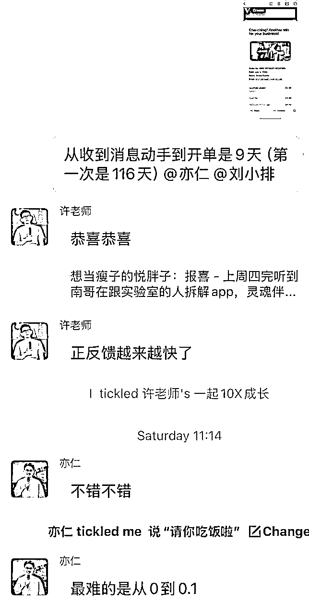

来源：https://ewtk6agpo4c.feishu.cn/docx/ZDzWdQSkmoTvEoxBwjVc5fWungc
第一个项目《聊天记录分析》代码coding时间超过800小时，历时116天拿到第一笔订单9.9刀
第二个项目 从收到idea--->制作--->推广--->第一笔订单一共是9天时间，说十倍速增长真的不为过。
感谢老师邀约，感谢大家的时间，不过度整理，大家体会精神。关于第一个项目的心酸历程，难产中，估计很快就出来了，3个多月的日更，整理起来确实有点费时间
A: 我自己的第二个产品 idea 是我偷听来的...
其实是亦仁海外团队负责人，我们 SCAI的一个外援大佬，跟 SCAI的伙伴拆解一个APP...
我好奇，就问大哥，刚刚拆的是什么？
他就跟我讲了一下...他说现在这个在 TikTok 上非常火，而且这两个产品疯狂地在投广告，花钱投广告，我就搜了一下，确实非常火。
他就说你可以尝试做一下...
但是如果下个星期三之前你做不出来，我就要在生财里面发帖子了。
我说你不许发😭，我这个周末我就做出来...
时间线如下

A: 这个是 418 的时候，我跟老师见面的时候，老师告诉我的，就是你脑子里面有任何想法、有灵感，你都把它记下来，你看到了一个新的东西，新的产品或者任何东西。
你只要有想法，你就立刻记下来，这个是一个点。第二个点的话，我自己是每天会看 20 个 toolify 的产品，做记录。就是纯看，纯记录感受。
A: 我其实想说大家可以去看一下我之前的一条帖子《30分钟验证idea是不是需求》，就是怎么快速验证自己的需求。你 30 分钟，你就可以验证你自己的 idea 是不是一个需求。
首先你得描述你的 idea 是什么，你就找到你的keywords，找到 keywords 之后你就要去榜单里面搜索竞品。搜索到了竞品之后你应该能够看到一些产品。
找到竞品之后你就看他们的核心数据下载量和收入。
怎么搜索？
有七麦有那个sensor tower，这个还挺多的。
看完了核心数据之后，你就大概知道你这个想法有没有人做？他做了之后他的收入如何？...
你还可以去看社交媒体的流量，比如说你找到了那个竞品，你去看看他发的一些，他应该有官方号。
A: 我做了三次重构，不是我做了，我一共做了三次，重构了两次，一直都有修改，我不停地修改，同时我的推广也在做。《web出海建站，小白必学》
A: 我第一个产品其实是因为 TikTok 的一个热度起来的。
但是那个时候我不知道...它 1 月份的时候在那个 TikTok 上爆了爆火，于是就产生了这个 chat recap 这个词...
1 月份的热点， 5 月份我上线了。那明显就是这个热度已经过去了
我 5 月份上线的时候，我社媒推广也做SEO，也做 DISCORD 也做，评论区截流也做，但是就是因为它的热度已经过去了，就是人已经被人家的网站吃完了，我的网站一直就起不来。
A: 我的冷启动？
这些就是社媒推广，所有的社媒，我说的是所有你能够想象得到的所有，
SEO 也做，我之前应该是上了八九十个外链
DISCORD 私信你去潜入所有的你的竞争对手的DISCORD，你每天私信 10 个人。
评论区截流就是因为我自己是社交媒体，偏 c 端类的，我会去对方的发的那些内容底下去截流...
你就是你做一切你能够做的事情，我说的是一切你能做的事情，不管是 SEO 也好，还是社交媒体也好，当然这些都是不花钱的。
A: 是我每一个网站，因为我只有creem，我没有stripe，也没有Paypal，也没有paypro，我只有cream。我第一个产品有做免费功能，付费解锁，我第二个产品直接是付费解锁。
A: 我自己的第一个产品是积分制，第二个产品的话是一次性付费。
这个根据产品来的吧，建议可以问GPT。
A: 因为我的产品是一张图，一开始的时候我定价 9 块9，因为我的那个对标是一个APP，它的产品定价大概是 10 刀和 15 刀每个月...
结果我再去看人家的APP，人家的 APP 还有很多附加功能...
我就把价格降到了最低，但是 creem 价格最低的是4.49，在 4.49 和 4.99 之间，我让 GPT 给我做了一个抉择， GPT 给我选择了4.99...
但是我觉得 4.99刀还是太贵了，因为只出一张图，为了出第一单，我把我的优惠券设置到了一折。也就是说 0.5 美刀...
后来我就改了一下我的那个优惠券策略，就是你第一次点击付费的时候不会给你弹优惠券他如果第二次再点付费的时候，就会给他弹一个优惠券去挽留他。（APP的挽留策略）
A: 100 天只上线了两个产品
我第一个产品做了 116 天出单...第二个产品是 9 天出第一单。
其实因为我真的是一个零基础的...其实在过去的 116 天里面，我学了怎么编程...学习了怎么去看产品，对标产品...推广这一块也是...
那你 AI 编就是你做产品出海，
技术，产品，流量
就其实就是这三块，我过去的 116 天里面这三块我自己全部都摸到了。
A: 那必须得说，肯定第一个是技术
从 idea 到完成上站是 coding 时间 24 个小时...
第二个就是我第一次吃了亏。我第一个产品是 1 月份的热点， 3 月份我开始做， 5 月份我才做完开始推广..
现在就是它正在热点，因为第一次吃了这个亏，这一次我不能吃亏...
工作流的话，我觉得应该是重要紧急 Todo 的一个排序。（我以前会花很多时间在一些并不那么重要和紧急的事情上。
A: 首先你得知道你的用户是谁
你发现你描述不出来你的用户是谁的时候就有问题。
精准描述。
重大调整倒没有，除非是有bug，小调整。但是小调整我会先记下来...
两个产品在找用户的思路上有什么不同？
我都是 c 端，我都是去那个 TikTok 、 YouTube 和 Instagram 上发。
A: 速度快！
快的原因其实是“快”
怎么快？
为什么能快？是因为我进步了，我的技术有提升...
热点也是快，你慢了的话它就不热了，趁热打铁。
A: 就是三个东西，我都学技术，产品、流量这三个东西...
就在这第一个项目里面，我学习了怎么写代码...
你产品推做完了之后，你一定会学怎么推广...
在你去找竞品的时候你会学习怎么去找产品...其实我觉得正经来说其实有点按照项目进程去学习，就是你到了什么时间点，你就会学到什么内容。
A: 都有...
踩坑其实不会成长，只有复盘以后才会成长。
刻意去学，当然，那比如说我现在刻意去看产品，每天看 20 个产品，那就是在刻意去学...
反正就是你，你没有办法一天成为一个master，这东西就是你得花时间去积累，去刻意练习，包括我觉得就是这个 Todo 这个重要紧急，这个其实也是你都要刻意去练习的。
A: 我不能跟别人比...
但是你找到自己的优势确实很重要。我觉得现在我找稍微找到了一点，我的优势就是公开表达这件事情对于我来说毫无压力。（直播简直易如反掌）
自己毫无压力的东西，做起来毫不费劲的事情，而且自己做起来还挺喜欢的东西，就是自己的优势。
A: 我觉得是看你目的，看你阶段...
第一个项目，其实我就是学习...闭环就是真正的拿到第一单...
第一个项目对于我来言就是学习拿到验证闭环..
那第二个项目的话对于我而言就是先赚到 100 刀...
我第二个项目我的关键结果就是 100 刀和 1, 000 刀，就是钱。
A: 其实我很多的崩溃时间是，就是你自己其实写题就是你自己在创业的过程中你会知道自己其实很多很 down 的时间，很多崩溃的时间是其他人完全感知不到的...
我记得一开始崩溃的时候，是因为我的那个网站怎么都部署不上去，就很想哭...
崩溃是正常的，feel down 也很正常...
我一点不稳定，我天天发疯，原地发疯，真的崩溃会睡不着...
写日更真的是一个很好的记录自己的当下的情况的方式，当下的情绪...
日更在林悦己的创业实验室，当时是跟着航海的养成系IP开始，一直到现在，不知不觉，记录了很多创业心酸史....
A: 我只做了两个产品，这两个产品是指我上线了两个产品，推广了两个产品。
但是我自己有一些很小的 idea 什么的，我自己有做着玩那些可能有十几个，但是真正是上线和推广的只有两个，这两个都开单了，第一个是 9 块 9 刀，第二个是已经开了 18单，66刀吧，
我的产品人群是不同人群还是同一批人群？因为我做的都是 c 端的产品，而且都是跟情侣相关的，其实算是一批人群。
阶段想做很多产品，有什么建议？我的建议是你可以问老师。
A: 我觉得是看你的阶段。
A: 我没有找，不好意思，我真的没有找，我没有找。
A: 我觉得是 OK 的，没问题。
在我看来就是你，只要是你这个产品能满足你自己的需求，那就是能帮助你自己提效，等于赚钱。
为什么呢？因为你也会去花钱买其他的工具，你给自己解决了这个需求，相当于省钱。反正你买你都要花钱买工具的，你自己做了一个工具，立省 100 刀！
A: 我这个产品的热度还没有过，我会继续考虑，不是，我会继续发我的社交媒体，一会直播结束之后，我就会开始继续发我那些很尬的视频。
A: 关于种子用户这一块，我自己是有学 DISCORD 去建立 DISCORD 的。
我两个网站都有，但是没有一个人加。
我第一个产品其实是不停地在改，我重构了两次；第二个产品的话就是我快速地把这个产品的 MVP 做出来了，就是用户能用、能支付流畅，我就开始疯狂地发社交媒体。
你的流量到达了一定的级别，比如说你每天有 1000个人访问，当有超过 1, 000 个用户使用过了，那你这个时候就可以开始考虑你迭代你的产品了。
A: 可能是你理解为那种很大的需求，我的建议就是从现在开始，你每天把你所有的想法都记下来，把你所有遇到的困难都记下来。
你每天记 10 个，一周以后你就会找到了 50 个需求啊。
我说的是工作日，对你周六、周日的时候你会有 50 个需求以及难点。
那这个时候你不要说出自己没需求了，一个礼拜没上站，我觉得就是你对自己一开始的要求太高了。
A: 因为我两个产品都是针对 c 端的，我都是去做社交媒体的一些推广，如果是对你们来说的话，我觉得是得看你的产品是什么，你这个产品的用户人群是哪些人群？
这些人会出现在哪里？
比如说你的产品如果是卖铲子，那这些人都是程序员，那程序员会出现在哪里？可能是 Githup，可能是大家的群里面，可能是老师的哥飞老师的群里面。那你这个时候你就先加入哥飞老师的群里，是吧？
你就展示你自己就好了，是吧？
“钓鱼法则”的第一条，你得去有鱼的地方钓鱼
你得去你用户出现的地方，你去那个地方蹲他们，你才可能找到你的用户。
A: 我觉得对于出单来说最重要的事情就是搞流量，流量大了你转化率再低，你想你 1, 000 万的流量，你转化率只有 千分之一，你也有1万个用户。
我觉得最重要的事就是搞流量，找用户让人看见，其实这三个就是一个点，就是搞流量。
A: 是的。
A: 你问我该不该放弃，我只能说是你得自己决定，就是首先你问我，那我问你几个问题，
就是你说你冷启动没启动成功，不是说发那个 product counter，就算是进行冷启动成功了，不是你打榜了就是启动了的。
就是你得看你自己做了什么事，该不该放弃，我觉得是你自己的选择。
你给自己一个时间期限，就是在这个时间期限我希望能够达到一个什么样子的标准，就是你可以是赚钱的标准...可以是用户量...当然你也可以是访问量...
A: 我没有做工具站，也没有做游戏站，我做的两个都是跟社交有关的。
A: 我做国内的自媒体纯属于练手...
我做国内自媒体就是随便做的，一个是练手，一个是找体感。因为我抖音起号了之后，我这一次再做我第二个产品的 social media 的时候，我就觉得是我的体感上来了，我在做那个TikTok，还有YouTube，包括那个 Instagram 的时候发视频怎么去对标，怎么去找，我觉得就有体感了，这个是国内自媒体练手带来的。
（视频很糙，但是也有人看，2小时 整4条视频，从拍摄到剪辑.....那条视频号10万播放的套壳刘小排就是快速拍的～
A: 写申请给许老师。
A: 是的啊。新手最推荐哪个平台？你能用哪个平台就用哪个平台。如果你能上stripe，你当然上stripe。因为 creem 我接得很早，我大概是 3 月份我就给接了，我没有怎么遇到坑。
A: 我目前没有留存任何海外用户。
我第一个产品是有留邮箱，我收到了我的用户，就我用户注册之后我会给他发邮件，我第二个产品是没有留任何东西，我只有在数据库里记录他们填的信息，但是没有留他们的任何联系方式，压根没有用户怎么管理呢？对吧？
感谢亦仁的支持，感谢老师的的邀约，感谢大家的时间看我的2小时直播，感谢大黄哥帮我拥有一个干净的环境能疯狂发视频，感谢二哥葱哥的技术支持，感谢SCAI小伙伴的陪伴和鼓励，感恩遇到的一切，包括哪些让我崩溃的bug！
崩溃常在，总会过去。
林悦己：0基础出海，没有技术，没有产品经验，不是互联网运营出身，但是只要我足够努力，持续成长，总有一天能干翻大家！